Reference Images
Seluruh gambar hasil generate untuk homepage hingga modul WMS disalin ke folder assets/img/reference.
Gunakan halaman ini untuk mencocokkan slicing dengan board visual. Struktur file gambar tersedia juga langsung di folder assets/img/reference.
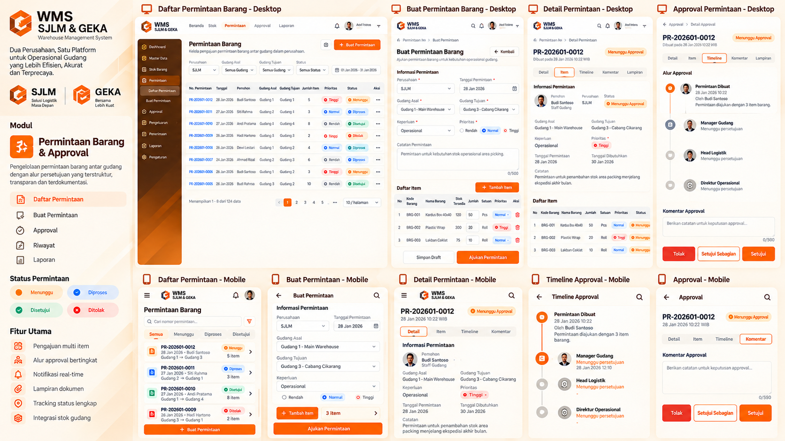
geka_warehouse_approval_dashboard_mockup.png
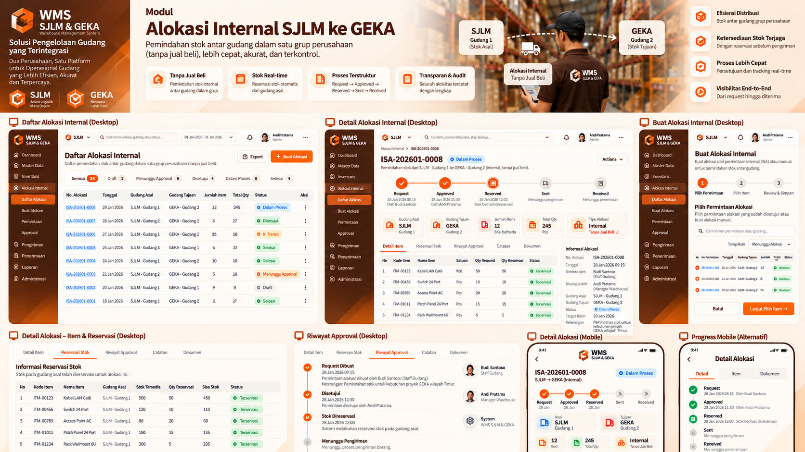
orange_warehouse_management_dashboard.png
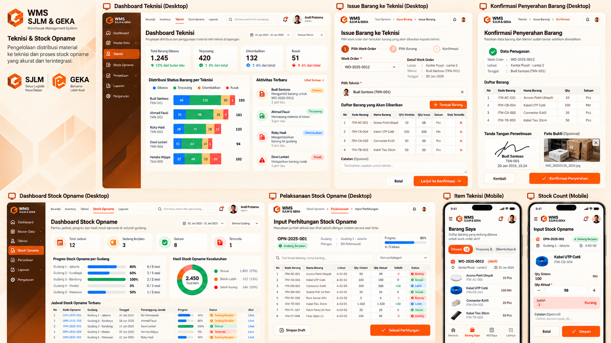
orange_warehouse_management_dashboard_board.png
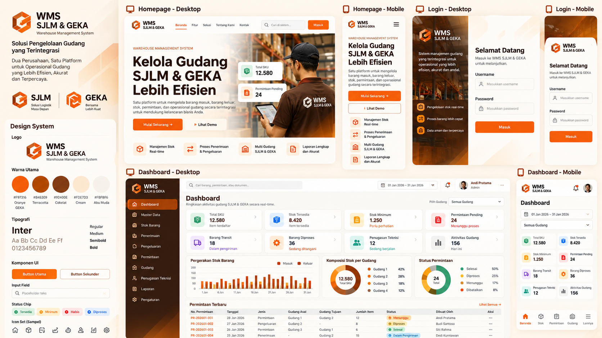
terracotta_warehouse_management_showcase.png
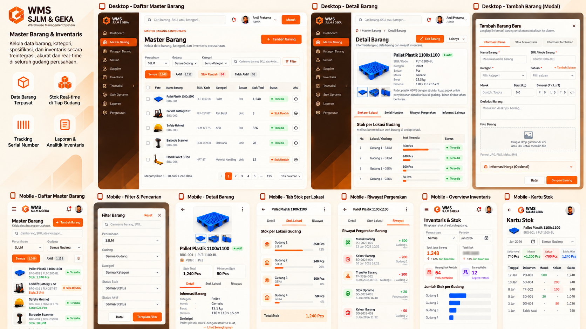
warehouse_management_dashboard_showcase.png
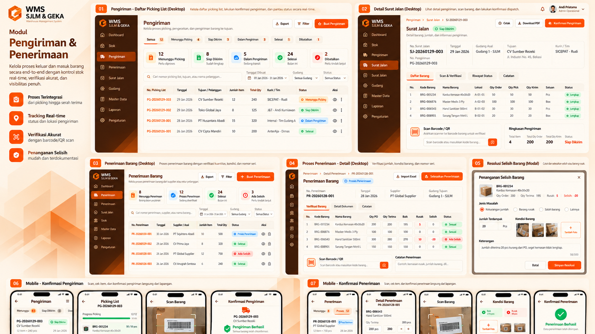
warehouse_management_ui_dashboard_board.png
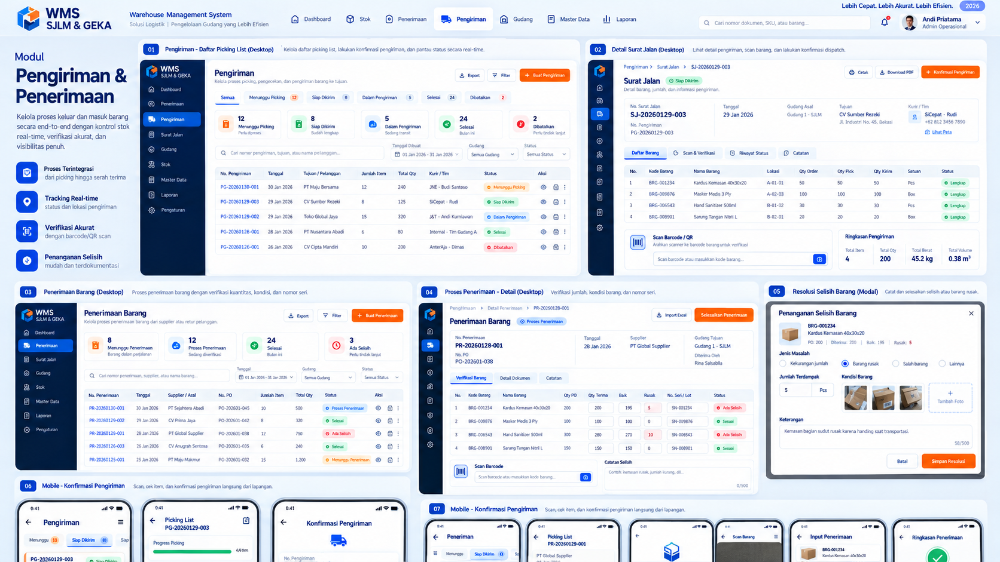
warehouse_shipping_receiving_ui_showcase.png
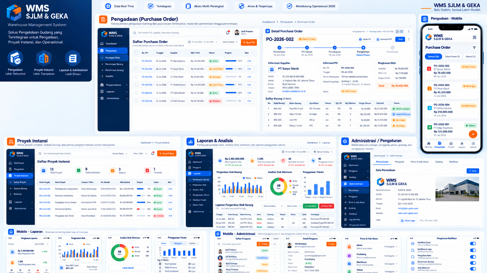
wms_dashboard_ui_showcase_poster.png
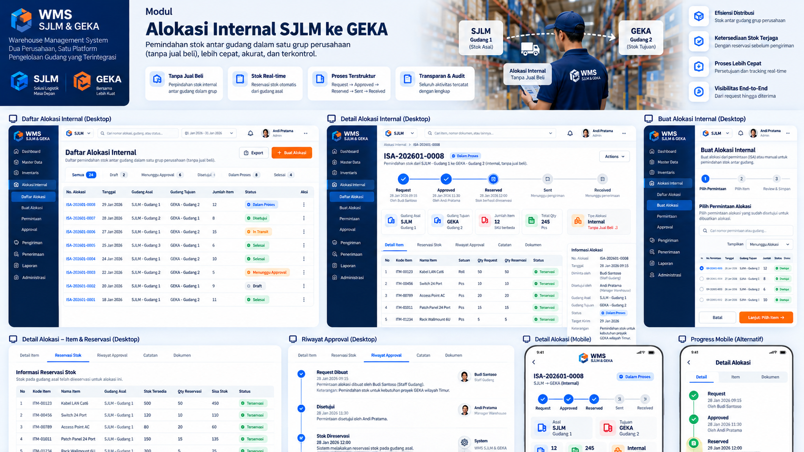
wms_internal_allocation_ui_ux_board.png
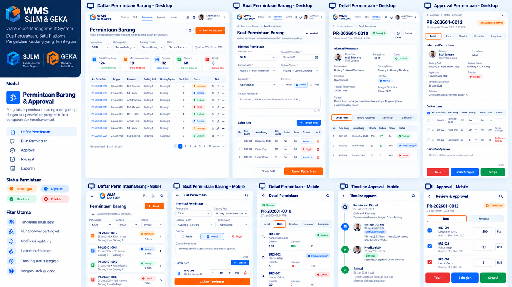
wms_permintaan_barang_approval_showcase.png
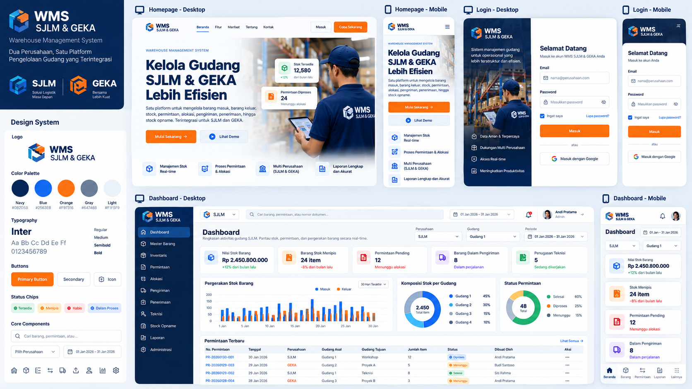
wms_sjlm_geka_ui_showcase_board.png
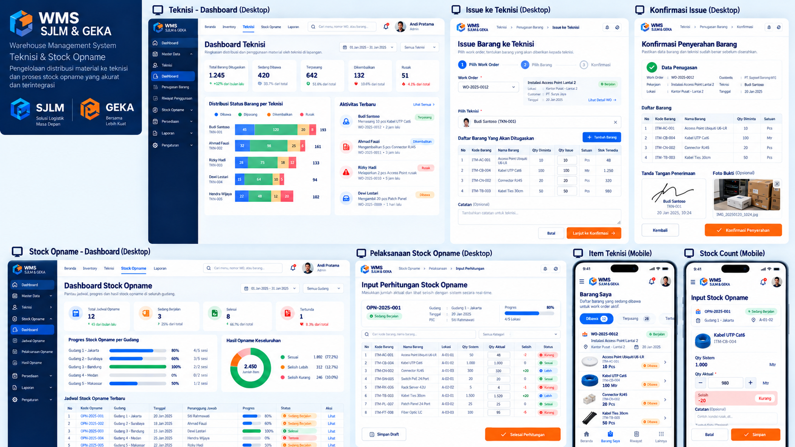
wms_teknisi_dan_stock_opname_board.png
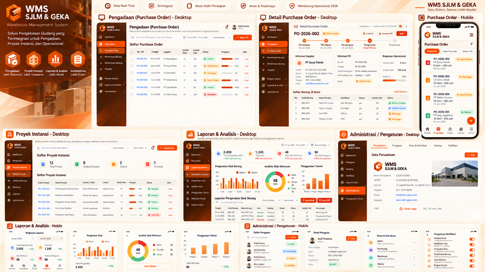
wms_warehouse_management_ui_showcase.png